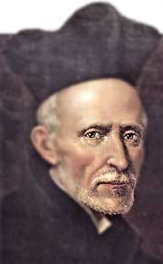

Biografía
José de Calasanz nació en Peralta de la Sal, un pequeño pueblo situado en la actual provincia de Huesca, en 1556. Con trece años, José deja su pueblo para estudiar en el colegio de los padres Trinitarios de Estadilla, a unos 21 Km. Al cumplir los quince años, José de calasanz manifiesta la decisión de hacerse sacerdote. Su entrega, su generosidad, su anhelo por ayudar a los demás, van unidos a una fuerte y vivencial fe en Dios, aumentada por el ejemplo y la educación recibida por parte de su familia. Terminados sus estudios eclesiásticos, José es ordenado sacerdote en 1584, a los 26 años. Aconsejado por el obispo de Urgell, Andrés Capilla, Calasanz se va a Roma en 1593. Antes de cumplir los 7 años de su estancia en Roma, el río Tíber, se desborda, provocando la más catastrófica inundación del siglo. Como resultado de ésta, centenares de familias pobres quedaron sin techo, sin alimentos y hay más de dos mil muertos. Calasanz, con gran integridad, trabaja infatigablemente en la operación de ayuda a los afectados. Se integra en Roma en las denominadas Cofradías, asociaciones que se dedicaban a la caridad. Calasanz encontrará junto a los necesitados, a los niños. Con el tiempo, los niños pobres de aquellos barrios romanos se convertirán en su principal punto de atención. Fruto de este descubrimiento, comienza a pensar en crear una escuela gratuita abierta a todos los niños, especialmente a los más necesitados. No todos a los que les propuso la idea la vieron con buenos ojos. Y entonces decide lanzarse solo a la aventura. Y hacia 1598, en la sacristía de una iglesia que solía visitar, Santa Dorotea, en el Trastévere romano, comienza la primera escuela gratuita de Europa.Frases Célebres
"La buena educación de los jóvenes es el ministerio más digno, noble, meritorio, beneficioso, útil, necesario, natural, razonable, grato, atractivo y glorioso"
"Es necesario recoger antes como concha para derramar luego a los demás como canales"
"Procure atraerse a los alumnos, mostrándose más padre suyo que juez riguroso"+